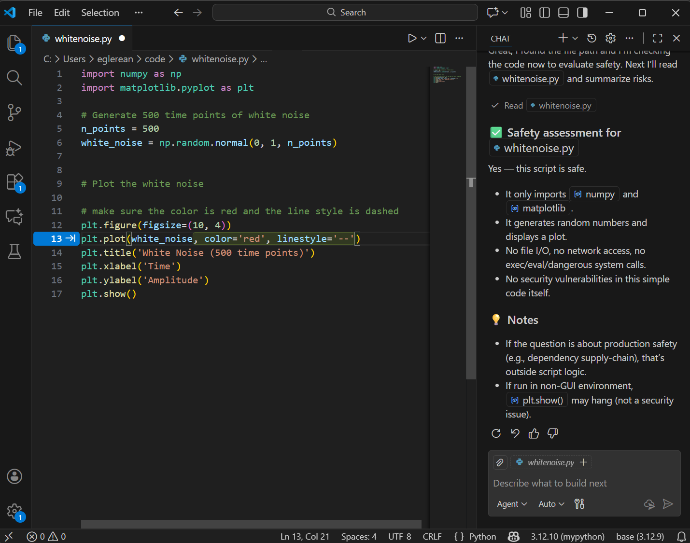

Scenario II: IDE Integration (Tab Completion and Inline Suggestions)
Questions
How do IDE-integrated AI assistants like GitHub Copilot work?
What information is sent to remote servers when I use these tools?
How can I configure these tools to balance productivity and privacy?
Objectives
Understand how IDE-integrated AI assistants process your code
Learn to configure GitHub Copilot and similar tools
Recognize the reduced transparency compared to chat-based approaches
Develop habits for reviewing inline suggestions critically
The IDE integration scenario
In this scenario, AI assistance is integrated directly into your development environment. As you type, the AI suggests completions, entire functions, or even multi-line code blocks.
{kind=link}

Visual Studio code with GitHub copilot plugin. You can see the chat and a suggestion based on a comment that is waiting to be accepted. The AI system runs in a remote end-point most likely in USA GitHub (Microsoft) servers.
How this differs from chat-based coding
Aspect |
Chat-based (Scenario I) |
IDE-integrated (Scenario II) |
|---|---|---|
Data flow |
You explicitly paste code |
Context sent automatically |
Visibility |
You see exactly what you share |
Less clear what’s transmitted |
Execution |
Manual copy/paste |
Still manual, but faster |
Context |
Limited to what you provide |
May include entire project |
What information leaves your machine?
When you use IDE-integrated tools, data transmission happens automatically and continuously. Understanding what’s sent is crucial.
Typically transmitted data
Data Type |
Purpose |
Privacy Concern |
|---|---|---|
Current file content |
Generate relevant suggestions |
May contain sensitive code |
Open file tabs |
Broader context |
More exposure |
File paths |
Understand project structure |
Reveals project organization |
Cursor position |
Know what to complete |
Minimal concern |
Recent edits |
Understand your intent |
Sent frequently |
What may be transmitted (tool-dependent)
Other files in your workspace
Git history
Comments and docstrings
Import statements (revealing your dependencies)
Read your tool’s documentation
Each tool has different data collection policies. For example:
GitHub Copilot transmits code context to GitHub/Microsoft servers
Some tools offer “local only” models (e.g., Tabnine)
Enterprise tiers may offer data isolation guarantees
Setting up GitHub Copilot
Warning
To-Do: The content of this session might not be fully up to date.
GitHub Copilot is currently the most widely-used IDE-integrated assistant. Here’s how to set it up with privacy and control in mind.
Installation in VS Code
Install the “GitHub Copilot” extension from the marketplace
Sign in with your GitHub account
If you have an educational email, you may qualify for free access
Key configuration settings
Open VS Code settings (Ctrl+, or Cmd+,) and search for “Copilot”:
{
// Disable automatic suggestions (require manual trigger)
"github.copilot.enable": {
"*": true,
"markdown": false, // Disable for documentation
"plaintext": false // Disable for plain text files
},
// Require explicit trigger instead of automatic suggestions
"editor.inlineSuggest.enabled": true,
// Control which files Copilot can access
"github.copilot.advanced": {
"indentationMode": {
"python": true,
"javascript": true
}
}
}
Disabling AI assistend coding for sensitive files
Ideally, there would be an equivalent of .gitignore so that certain files are never sent to remote end-point (e.g. secrets, credentials, sensitive data). Some tools support this type of control, but with GitHub copilot “Content exclusion is available only with a GitHub Copilot Business or a GitHub Copilot Enterprise subscriptions.”.
For a recent survey of other tools and their ignore settings, see this link.
An alternative is to run VScode inside a container so that only certain folders of the file system are visible, and secrets can be separated.
{kind=link}
Features beyond simple completion
Modern IDE integrations offer more than tab completion:
Inline chat
Many tools now allow you to chat with the AI directly in your editor:
Select code and ask “explain this”
Ask to refactor or improve selected code
Generate tests for highlighted functions
Automated multi-file edits
Some tools (like Cursor, Copilot Workspace) can:
Edit multiple files simultaneously
Apply changes across your codebase
Suggest refactoring patterns
Increased risk with automated edits
When tools can modify multiple files:
Changes may have unintended consequences
Harder to review all modifications
Version control becomes essential
Always commit before automated multi-file operations.
Developing critical review habits
With suggestions appearing automatically, it’s easy to accept them without sufficient review. Build these habits:
Critically assess suggestions
Before pressing Tab to accept:
Read the entire suggestion
Ask yourself: “Does this match my intent?”
Check for obvious issues (wrong variable names, edge cases)
Watch for common issues
Issue |
Example |
How to Catch |
|---|---|---|
Wrong variable |
|
Check names match your code |
Missing edge case |
No check for empty list |
Ask yourself about inputs |
Outdated API |
Using deprecated function |
Check documentation |
Wrong assumption |
Assuming sorted input |
Read comments critically |
Accept-then-review workflow
Some developers find it faster to:
Accept the suggestion
Immediately review line-by-line
Delete and redo if wrong
This works but requires discipline. Don’t skip step 2.
Alternative tools: Windsurf
GitHub Copilot isn’t your only option. Here’s how alternatives compare:
Windsurf (previously known as Codeium)
Pricing: Free core features
Privacy: Claims no training on your code
Features: 70+ languages, chat interface, Windsurf IDE
Setup in VS Code:
Install “Windsurf” extension
Create account at windsurf.com
Authenticate in VS Code
Exercises
Exercise IDE-1: Critical suggestion review
With AI suggestions enabled, type the following function signature and observe the suggestions:
def validate_email(email_string):
"""Check if a string is a valid email address."""
Accept the suggestion
Review it critically:
Does it use regex or simple string checks?
Does it handle all valid email formats?
Is it too strict or too lenient?
Search online for email validation edge cases
Ask yourself: is the AI-generated solution appropriate for your use case?
Solution
Common issues with AI-generated email validation:
May reject valid emails (e.g., with + signs, subdomains)
May accept invalid emails (missing TLD validation)
Regex might be overly complex or overly simple
The key lesson: “valid email” is surprisingly complex, and AI suggestions reflect common patterns, not necessarily correct patterns.
For many applications, using a well-tested library (like Python’s
email-validator) is better than AI-generated regex.
Exercise IDE-3: Context awareness experiment
Test what context your AI tool uses:
Open two Python files in VS Code:
main.py: Empty except for a function signaturehelpers.py: Contains a utility function
In
helpers.py, write:def calculate_tax(amount, rate=0.21): """Calculate tax amount for the Netherlands.""" return amount * rate
In
main.py, start typing:def process_invoice(amount): tax =
Does the AI suggest calling
calculate_tax?What does this tell you about cross-file context?
Solution
If the AI suggests calculate_tax, it demonstrates that:
Your open files are being used as context
The AI understands relationships between files
This is useful but also means sensitive code in open tabs could inform suggestions
This experiment shows why closing sensitive files matters when using IDE-integrated AI tools.
When to use IDE integration vs. chat
Use IDE integration when |
Use chat-based when |
|---|---|
Writing boilerplate code |
Designing architecture |
Completing obvious patterns |
Debugging complex issues |
Speed matters, risk is low |
You need to control context carefully |
Working on non-sensitive code |
Learning a new concept |
Summary
IDE-integrated AI assistants offer faster workflows than chat-based approaches, but with reduced visibility into what data is shared:
Context is transmitted automatically
You must proactively configure exclusions
Critical review habits are essential
Alternative tools offer different privacy trade-offs
The key question is: Do you know what’s being sent to the AI server? If you’re not sure, either find out or switch to a more transparent approach.
See also
Keypoints
IDE-integrated AI sends code context automatically to remote servers
Make sure you can exclude sensitive files
Always review suggestions before accepting, even if they look correct
Consider local-model alternatives (Tabnine) for sensitive projects
Close sensitive tabs when working with AI-assisted completion